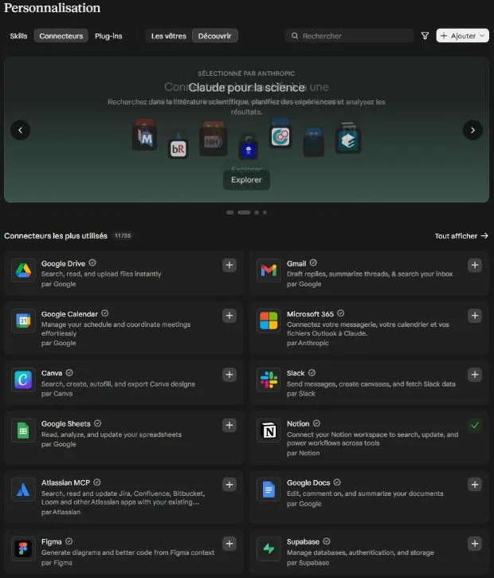
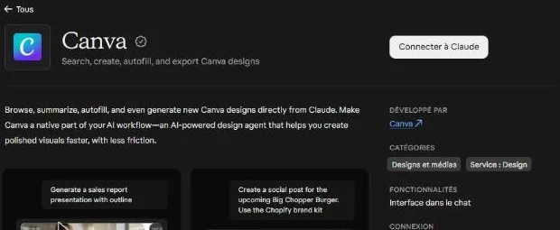
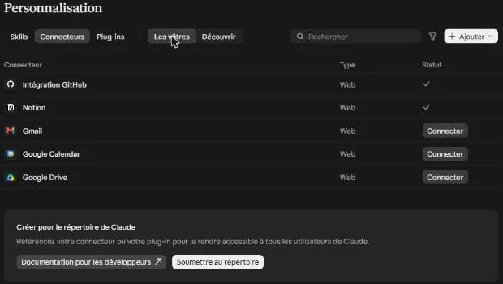
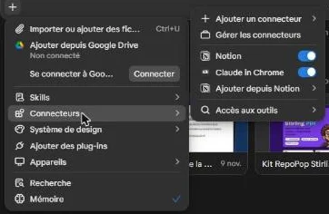
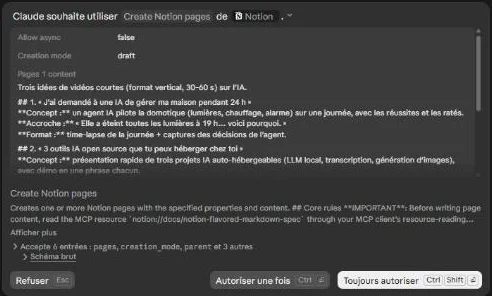
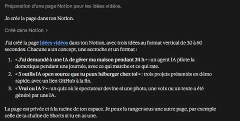

1
Ouvrir le catalogue
Personnalisation › Connecteurs › Découvrir
Cherche ton appli ou parcours les catégories. Le + ajoute directement, un clic sur le nom ouvre la fiche.

Branche Claude à ton agenda, tes mails et tes notes : il va chercher l'info et agit dedans, avec ta permission.

Un connecteur relie Claude à une appli ou un service (agenda, mails, notes, design…) pour qu'il y trouve l'info et agisse pour toi, sans copier-coller. Derrière, il y a MCP (Model Context Protocol), un standard ouvert que sa documentation compare à une prise USB-C pour l'IA : une seule prise pour brancher n'importe quelle appli.
Personnalisation › Connecteurs › Découvrir : Gmail, Google Agenda, Drive, Notion, Canva, Slack, Figma… Une fiche par connecteur, avec ses outils et son éditeur.
Tous les forfaitsTu actives un connecteur par conversation (+ › Connecteurs), et Claude peut te demander Autoriser une fois ou Toujours autoriser avant d'utiliser un outil.
Avec ta permissionUn connecteur ajouté sur claude.ai marche aussi dans l'appli de bureau, sur mobile et dans Claude Code (même compte).
Même compteTout se passe dans la barre de gauche de Claude (web et appli de bureau), menu Personnalisation, puis dans la zone de message de tes conversations.
Cherche ton appli ou parcours les catégories. Le + ajoute directement, un clic sur le nom ouvre la fiche.

Claude t'envoie sur la page de connexion de l'appli : connecte-toi et accepte les accès demandés.

Tes connecteurs branchés ont une coche ; les autres affichent Connecter. Un clic sur un connecteur ouvre ses permissions d'outils.

L'interrupteur choisit si Claude peut utiliser ce connecteur dans cette conversation.

Ici : « Crée une page Notion ‹ Idées vidéos › avec trois idées de vidéos courtes sur l'IA ». Claude prépare l'action et te la montre avant de la lancer.

La page est créée dans ton Notion, avec un lien direct depuis la conversation.

« Qu'est-ce que j'ai demain après-midi ? », « Trouve un créneau d'une heure cette semaine » : Claude lit ton agenda au lieu que tu le recopies.
Résumer les fils importants, retrouver une facture, préparer un brouillon de réponse dans ton ton.
Transformer un compte rendu en page Notion propre, ou retrouver une décision dans tes pages.
Chercher un design, en générer un nouveau ou l'exporter sans quitter la conversation.
Fouiller ton Drive pour retrouver le bon document et en tirer les chiffres utiles.
MCP est devenu le standard : les concurrents l'utilisent aussi, sous d'autres noms.
Bon pour : tout le monde, y compris en gratuit : catalogue Découvrir + un connecteur perso par adresse MCP (illimité en payant).
Bon pour : les applis partenaires ; brancher son propre serveur MCP passe par le mode développeur.
Bon pour : les utilisateurs Google ; une appli perso peut être ajoutée par l'adresse de son serveur MCP depuis juin 2026.

Chaque vidéo RepoPop Décode t'explique une fonction de ton IA en moins d'une minute, avec son kit comme celui-ci.